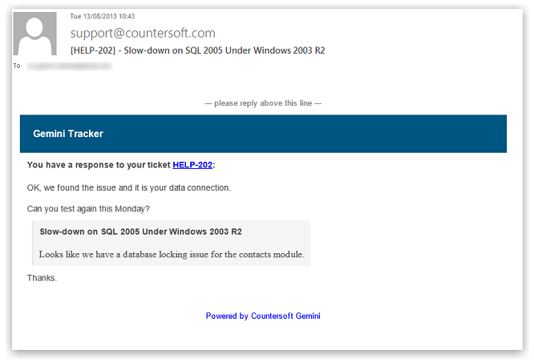
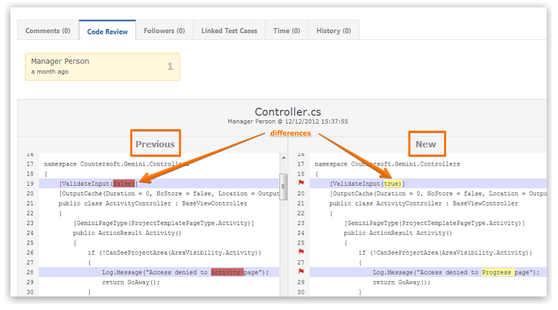
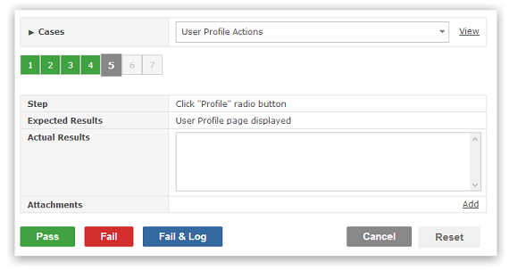

Apps bring additional functionality to Gemini. Gemini Apps help provide support for mailbox management, product roadmaps, and supplimental development tools.
The Breeze app provides you with the scalability for all forms of email needs. Breeze is compatible with IMAP and POP3, enabling you to plug your email server directly into Gemini, providing seamless integration for ticket creation, responses, and alerts.

With Saucery, Gemini because a powerful focal point for your business, while seamlessly integrating with already existing products such as [LIST PRODUCTS]. With Saucery, development has never been more flexible within Gemini.

Sentry is a powerful tool to run and record test plans, through test cases. With the ability for importable test plans, and cases, your need for testing has never been made easier.
